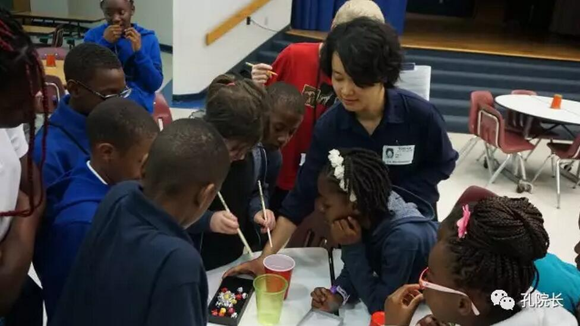
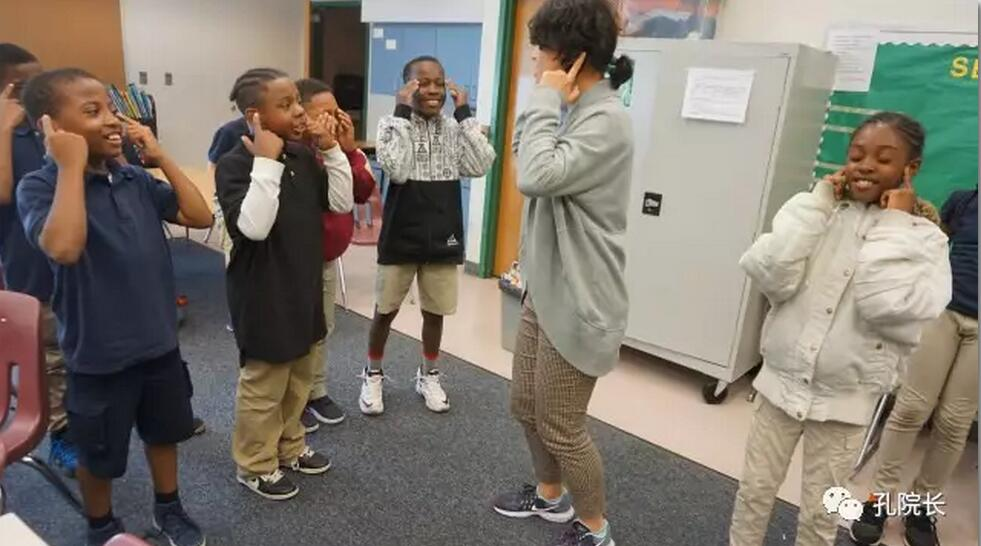
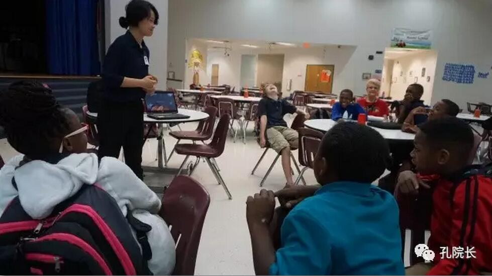
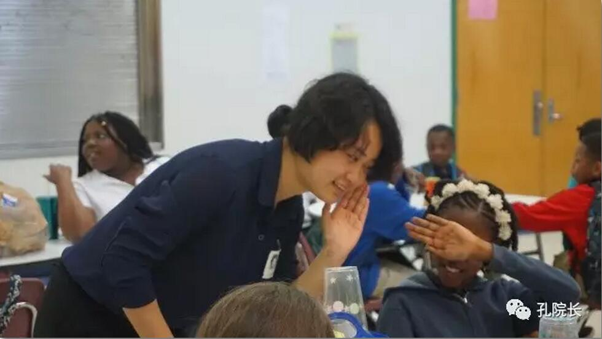

美国小学中文体验活动有感
 185
185
西佛罗里达大学孔子学院与彭萨科拉当地的C. A. Weis小学合作，于2017年4月进行了“Sailing Around the World”中文学习和文化体验的活动。
由西佛孔院外方院长李奎元博士、中方院长李冬青教授带队，我有幸赴彭萨科拉当地的C. A. Weis小学，教孩子们说中文并组织中文体验活动。这次活动的开展使我更深入到当地学校，切身了解了美国小学教育的特点及与成人教学、东方儿童教学的差异。
一、“入乡随俗”
由于该学校所在社区多为非裔美国人，因此学生结构上绝大多数也都是非裔美国人，他们精力充沛、能歌善舞、聪明好动，尤其喜欢饶舌、说唱。针对这一情况，我决定“入乡随俗”，当一回演员和说唱歌手。
准备活动期间，我教了学生们用汉语进行简单日常交际，如问好、告别、道谢、道歉等，并带入到各种情景中去演绎。学生们在不知不觉中就掌握了很多日常短语，并且演得不亦乐乎。

正式活动期间，主要目的是教授汉语数字零到十的读法。我将零到十编成一首rap歌曲，配合数字的手势，边唱边跳地教他们。因为这种教学形式，学生们听到第二遍就开始自发地跟我说唱律动起来。
这种不用说“跟我读”的教学手段，就是入乡随俗、因材施教带来的好处。
二、“学玩一体”
传统的教学模式一般是先认读学习再巩固练习，最后设计课堂活动，学好了做完作业就可以玩，但应对活泼好动的美国小学生，这种方法就会显得力不从心了。因此我没有将各个学习环节有意区分，使他们分不清学习和玩的界限，保持旺盛的好奇心和兴趣。
比如用rap边唱边跳边做手势地学完数字后，紧接着就进行了筷子夹球的比赛游戏。学生们只觉得是游戏，热情高涨。当我要求他们用中文数自己夹了多少个球时，他们不由自主地一次又一次一起数数，丝毫不觉得枯燥不耐烦。

这样将教学目标融进每一个教学环节中，将教学环节设计得学玩一体，充分吸引学生的兴趣和注意力，利用他们精力充沛、喜欢动手的特点，有效达成了教学任务。
三、妙用奖励
此次“Sailing Around the World”活动不单是中文学习活动，也是中国文化体验活动。但是对于小学生而言，大谈文化理论是不现实也无效的文化输出，因此只能将中国文化元素融入中文学习过程中，才能真正达到中国文化传播的目的。
在文化活动方面，我主要利用了课堂活动的道具——筷子。这些筷子是我从国内购买的具有中国特色图案花纹的。在进行筷子夹球活动前，先告诉学生这是中国人吃饭时最常用的餐具，然后给学生示范如何拿筷子。虽然筷子夹球比赛时，学生还是无法正确地使用筷子，但他们却牢牢记住了这“hard to use”的筷子是中国最常用的餐具。
检验学习成果时，这些他们爱不释手的筷子就成了“一等奖”。不少学生为了得到筷子努力练习，还和其他同学互相检验。最后得到筷子的学生表示他们回家后，要用筷子吃晚饭。

除了筷子以外，孔院还提供了精美的“北京十六景”明信片作为文化宣传和奖品。第二次活动的教学活动中，我用“头发、肩膀、腿和脚”的汉语歌进行教学。学生基本掌握后，我逐张介绍了明信片上的名胜或地标建筑，学生们惊叹中国之美，并都说自己以后一定要去中国。检验阶段，能正确唱完“头发、肩膀、腿和脚”的学生可以挑选一张自己喜欢的明信片。虽然小小的明信片价值不高，但是却在孩子们心中埋下了对中国喜爱和憧憬的种子。
四、“一视同仁”
这次中文体验活动就在这种愉悦和意犹未尽中圆满结束。该校“Sailing Around the World” SAIL Academy项目领导也对西佛孔院对活动的大力支持予以高度赞扬，并表示期待进一步合作。通过这次深入美国小学教学和组织活动的经历，我也收获颇丰。
其实每次谈到美国中小学教育的特点，我们都会说要适应学生，因材施教，多设计课堂活动，使课堂生动有趣。然而反思东方学生的汉语教学，甚至整个东方的教学方式，是不是就因为东方学生“内敛、害羞、不爱开口、服从老师”，就不应该把课堂设计得活泼有趣吗？答案当然是否定的。
或许除了“因材施教”，在任何国家的中小学教育中，都应该贯彻这种“一视同仁”的教学理念。不能因为东方学生的易害羞和内敛，就抹杀孩子们活泼爱玩的天性，采用“填鸭式”的不考虑学生感受的教育方式。我想，只有真正以学生为中心，让学生不把学习当做很苦很累的事，而是一件需要付出精力但令人快乐的事，才是每一个教育者应该秉持的理想。
作者简介

李斐，四川外国语大学2013级汉语言文字学专业研究生，2015年5月至2016年3月于泰国马哈沙拉堪府马哈沙拉坎国际标准学校任教，2016年7月赴美国西佛罗里达大学孔子学院任教至今。